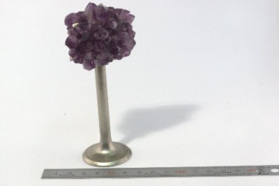
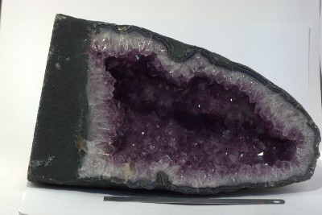
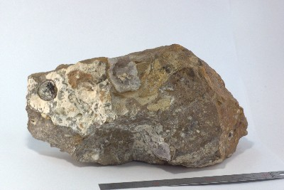

Верный ответ!
Аметист
Генетическая классификация:
Аметист является разновидностью кварца самая ценная из них.
Состав:
Будучи разновидностью кварца, аметист имеет состав кремнезема (двуокись кремния).
Физические свойства:
Окраска минералов различна: фиолетовая, от темно-пурпурной до розовой, кроваво-красная, лилово-фиолетовая. Блеск — стеклянный. Окраска связана с примесью железа. Аметист выдерживает высокие температуры, но если кусочек этого камня нагреть до 200 градусов, он станет бесцветным. Потом, охлаждаясь, снова вернет свою окраску. Под действием солнечных лучей аметист также может выцветать.
Морфология:
В природе аметист встречается в виде вытянутых кристалликов, похожих на скипетры от 5 до 100 миллиметров, и в виде отдельных друз.
Особенности образования:
Кристаллы аметиста растут, как правило, на серой непрозрачной кварцевой подложке.
